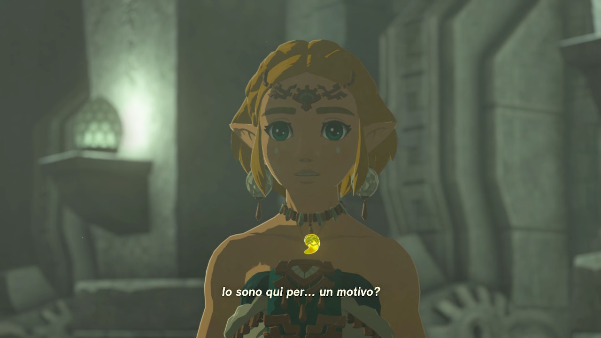

Perché sono qui?
È una sera di un giorno qualunque e avvolto nelle coperte sto facendo quello che si fa prima di andare a dormire: doomscrolling.
Mi imbatto in un Tweet:
"You have to stay alive. You're going to be such a beautiful middle aged freak. Young freaks will see you in the street and know that things can be okay."
Senza pensarci troppo faccio uno screen allo schermo e continuo la mia routine pre dormita.
Mi è stato chiesto di fare delle lezioni in una scuola superiore, senza pensarci troppo ho accettato pensando più al compenso che alla lezione stessa. Ho ripreso vecchie slides, dato un taglio divulgativo al mio lavoro di ricerca e ci ho cucito sopra un discorso.Inizia, più o meno, così:
"Buongiorno a tutti, sono Polticchia Mattia. Sarò qui ad annoiarvi per due ore su quello che è il mio lavoro". In aula cala il silenzio.
"Mi occupo principalmente di Learning Sciences & Digital Technologies", vedo i loro volti da poveri agnellini già consapevoli di annoiarsi. "Però lo faccio in maniera divertente. Studio i videogiochi e il loro impatto nell'apprendimento." nella mia testa rimane più complesso di questo, ma a loro sembra non importare. È bastato nominare videogiochi per aver ripreso la loro attenzione.
Nel cambio di blocco di slides chiedo:
"Qualcuno ha giocato a qualche videogioco recentemente?"
Timidamente, apre le danze una ragazza con una felpa rosa di Kuromi: "Genshin Impact", "Prof io gioco a Warzone", "Io Elden Ring".
Due, tre risposte. Mi aspettavo di più, sono proprio cambiati i tempi.
Poco dopo aver iniziato a parlare di Intelligenza Artificiale vengo interrotto da un altro professore "Ma qui ci sarei io, non te".
Avevo sbagliato aula. Tipico di Trash.
L'ultimo giorno del ciclo di lezioni carico a fare le mie ultime due ore e mezza e chiudere questo supplizio succede l'inaspettato.
Entro in aula, era la stessa aula della prima lezione. L'aula che avevo sbagliato. Rammaricato dalla poca interazione della volta precedente entrando in aula sento "Oh ma è il prof dell'altra volta!", mi giro, guardo lo studente e sorrido.
Appena giro lo sguardo, un altro ragazzo ha un Nintendo 3Ds in mano e The Legend of Zelda: A Link Between Worlds nell'altra che me li mostra fieramente.
Per chi mi conosce: un segno del destino, più di una fortuita coincidenza.
Per chi non mi conosce: ultimamente sono un po' fissato con il brand Zelda.
"Buongiorno a tutti, nonostante mi sia già presentato l'altra volta mi ripresento. Sono Polticchia Mattia e oggi cercherò di annoiarvi il meno possibile raccondovi come mischio i videogiochi e l'apprendimento". Qualcosa non torna, mi guardano, hanno riso alla squallida battuta sulla noia.
"Nonostante ve lo abbia già chiesto: Qualcuno ha giocato a qualche videogioco recentemente?"
"Genshin Impact!", "Elden Ring!", "Prof, io Zelda prima a ricreazione", "Prof io ho giocato a Warzone", "Minecraft", "Fortnite", "Animal Crossing" e hanno continuato per un po'.
Qualcosa è cambiato.
Arriva il blocco sull'Intelligenza Artificiale: "Chi conosce flappy bird?" tutta la classe alza la mano. Dei 2008 quando il gioco chiudeva avevano sei anni. Non ci sono sicuramente capitati per caso, mi stanno prendendo per il culo.
Credo.
Rispiego il concetto di Game Loop per la seconda volta, un ragazzo stava mischiando un mazzo di carte da briscola.
"Quindi, ragazzi, come ve lo rispiego questo senza sembrare troppo noioso? Prendiamo un gioco a caso "Briscola"".
Ecco nuovamente quel sentimento di connessione che alla prima spiegazione era mancato. Teste che si alzano, sguardi che si accendono e occhi puntati sulla lavagna. Parto da li, diventa una serie di botta e risposta che alimento per cercare di far sedimentare il concetto.
Arriva la ricreazione. Il momento in cui la classe si svuota.
Tiro un respiro di sollievo, mi si avvicina la professoressa che sta facendo sorveglianza: "Certo che giochi tanto, te. Li conoscevi tutti i giochi" rispondo imbarazzato "Sono una bella cosa, mi piace sperimentare" sperando il discorso non peggiori. La mia attenzione viene rapita dal ragazzo che sta giocando col Nintendo 3Ds.
Dall'altro lato dell'aula torna "Ice Breaker" con la stessa felpa di Kuromi della lezione prima. Ha con se due amiche e la sua vicina di banco.
Vedo apparire una Nintendo Switch e dei Joycon staccati. "Mario Kart" sento dire.
Tornando a casa penso a quanto erano spenti durante la prima lezione. Così poco reattivi. Quasi non sembrava la stessa classe.
Avevano il 3Ds, La Switch, le carte da briscola sul tavolo.
Non sono sicuro, ma non c'erano sul tavolo la prima volta. Che le abbiano portate perché avevano capito che sarei tornato io?
Questo non potrò mai saperlo.
Magari i primi venti minuti di pippone sulle Game Science gli hanno fatto ripensare ai loro vecchi videogiochi e hanno pensato di portarseli a scuola per tappare qualche buco di noia.
Ad un certo punto ho sentito il cuore saltare un battito e poi scaldarsi, un caldo accogliente, uno di quelli che ti fa venire gli occhi lucidi.
Il tweet: "Young freaks will see you in the street and know that things can be okay"
Da li ho iniziato a pensare che quando avevo la loro età il 3DS in borsa non era così ben visto, non era così normale, né compagni né dai professori.
Invece loro si sono ritrovati un professore che gli ha fatto la lezione con dei pokémon come sfondo, con un pupazzetto di Zelda appeso allo zaino e che gli ha raccontato concetti attraverso i videogiochi e i videogiochi come concetti.
È una roba strana ma mi ha scaldato il cuore il pensiero che, forse, sono diventato quello di cui il Mattia del passato aveva bisogno.